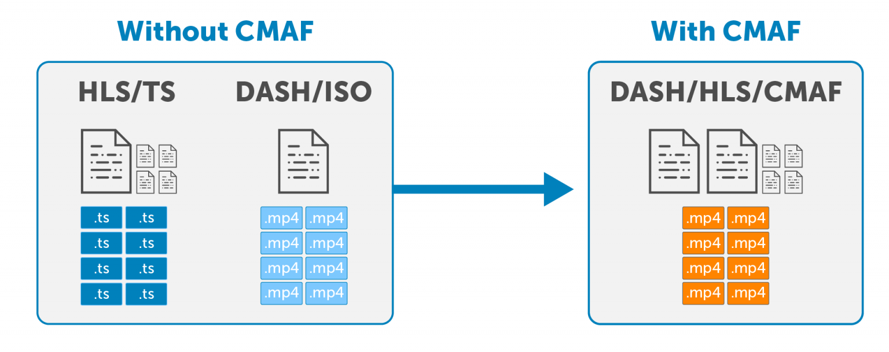
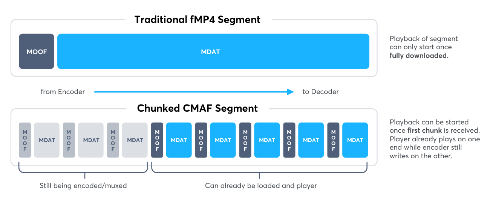
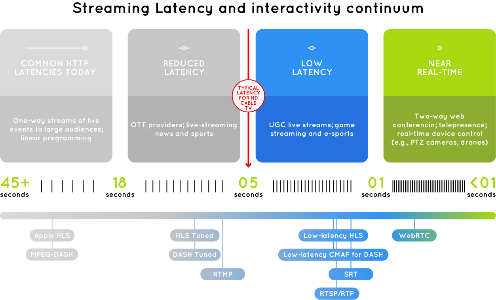

Sharings
Introduction to internet streaming
At first
Browsers were implemented as single process
Browsers did not have enough computational power nor memory to process video playback
Thus, video playback was "out-sourced" to 3rd party applications
Old days
There were protocols like
- Progressive download
- RTSP
- RTMP
Progressive download
By making use of HTTP range requests
Server side response
HTTP/1.1 200 OK
Accept-Ranges: bytes
Content-Length: 14246515
Client side request
Range: bytes=0-1023
Server side response
HTTP/1.1 206 Partial Content
Content-Range: bytes 0-1023/14246515
Content-Length: 1024
RTSP/RTMP
They had no browser native support, therefore required plugins like
- Macromedia Flash
- Sun Java
- Microsoft Silverlight

NPAPI
However though...
These plugins relied on NPAPI
Which browser vendors abolished due to the rise of HTML5
HTML5 age (2008)
Part of the reason why HTML5 came so strong is because Apple open-sourced its Webkit project, a browser engine, in 2005.
Where SmartTVs adopted Webkit as their SmartTV app execution environment.
Which also gave birth to Google Chrome in 2008.
Pre MPEG-4
The mainstream of media containers were
- .avi
- .wmv
- .mpg
MPEG-4 age
Thanks to MPEG-4, HTTP distribution procotols arose...
- Apple proposed HTTP Live Streaming in 2009
- Microsoft proposed Smooth Streaming in 2010
- MPEG group proposed Dynamic Adaptive Streaming over HTTP in 2011
- Adobe proposed HTTP Dynamic Streaming
MPEG-4 age
Thanks to MPEG-4, HTTP distribution procotols arose...
- Apple proposed HLS in 2009
- Microsoft proposed Smooth Streaming in 2010
- MPEG group proposed DASH in 2011
- Adobe proposed HDS
Protocols are died because they requires plugins (Silverlight, Flash)
HLS/DASH
- Manifest
- Compilable list of renditions
- Resolutions
- Bitrates
- Compilable list of segments
- Segments
- HLS: MPEG-TS
- DASH: MP4
Common Media Application Format (CMAF)
Proposed by Apple and Microsoft, to solve different container formats used in HLS & DASH, standardized in 2018
CMAF saves bandwidth & storage cost from origin & CDNs
Common Media Application Format (CMAF)
Media Source Extension (MSE)
In 2013, MSE has been written into W3C specification, which catalyzed the abandon of Adobe Flash on streaming
Media Source Extension (MSE)
HTML5 Players
- Shaka Player released by Google
- VideoJS released by Brightcove
- Dash.js released by DASH IF
- hls.js released by Dailymotion
HTML5 Players
- Unfold media manifest
- Download media segments
- Evaluate client bandwidth
- Decide a suitable rendition
- Unpack media segments to Buffer
WebRTC
Despite its early release in 2011, WebRTC has not been picked up as a streaming candidate until recently
Because HTTP streamings has an inevitable drawback, which is Live Streaming Latency
Live Streaming Latency
Low Latency Streaming
- Low-Latency HLS (L-HLS) proposed by Akamai, Elemental, JW Player, Mux, and Wowza in 2016
- Low-Latency HLS (LL-HLS) proposed by Apple in 2019
- Low-Latency DASH (LL-DASH)
- High-Efficiency Streaming Protocol (HESP) proposed by Synamedia, THEO in 2020
- WebRTC
Low Latency Streaming
Different techniques used in proposals
- HTTP/1.1 Chunked Transfer-Encoding
- HTTP/1.1 Ranged requests
- HTTP/2 Push
- Fragmented MP4
- #EXT-X-PRELOAD-HINT on manifest
Contribution Protocols
The most commonly used consumer contribution protocols are
- RTMP/RTSP
- HTTP PUT
Contribution Protocols
More advanced contribution protocols
- Secure Reliable Transport (SRT)
- Zixi
- Reliable Internet Stream Transport (RIST)
- Network Device Interface (NDI)
- RTP with Forward Error Correction (RTP-FEC)
Sum up
Sum up
Future potential protocols
- HTTP/3 QUIC
- HTTP/3 WebTransport
- WebCodec